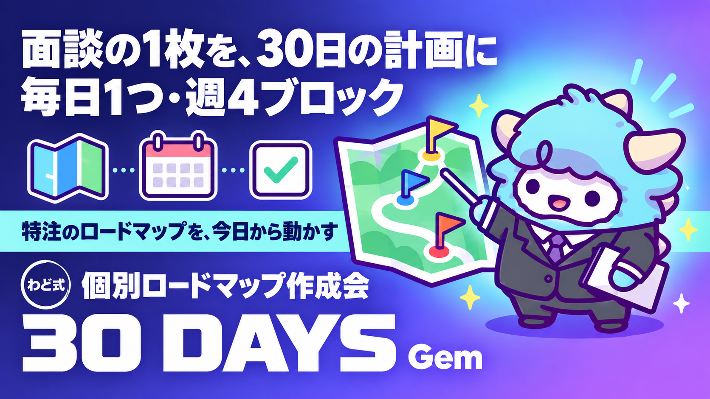

個別ロードマップ作成会 Gem＋シート
面談で受け取った「特注の1枚」を、30日の計画に落とす
このページが特典の本体です。下へスクロールして使ってください個別ロードマップ作成会 Gem＋シート
面談で受け取った「あなた専用の1枚」を、30日で回せる週ごとの計画に変えます。Gemに現在地を伝えるだけで、週ごとの到達点と毎日の1タスクまで割ってくれます。
はじめに
わどです。
面談では、あなたの状況に合わせた「特注の1枚」を一緒に作りました。今のあなたに合った最初の1件、あるいは今のあなたが次に進めるべき動きが、その1枚には書かれているはずです。
ただ、1枚の紙に「やること」が書かれているだけでは、実際には動けません。人は「今日、何を、どれくらいやればいいか」が分からないと、行動を先延ばしにしてしまうからです。大きな目標を渡されても、初日にやることが分からなければ、結局手が止まります。
この特典は、その「特注の1枚」を、30日間の週ごとの到達点と、毎日1つのタスクにまで分解するためのものです。中身は2つです。
- あなたの状況をGeminiの「Gem」に伝えるだけで、30日シートの下書きを作ってくれるシステム指示
- 自分の手で書き込みながら計画を立てたい人のための、30日シートそのもの
Gemを使ってもいいですし、このページの30日シートに直接書き込んでもいいです。どちらも同じ考え方で作られています。
この特典の進め方
- 「最初のゴール」で、面談で決まったことを1行にまとめます。
- 「1. 『特注の1枚』を30日に割る考え方」を読んで、週ごとの到達点という考え方をつかみます。
- Gemを使いたい人は「3. Gemシステム指示 全文」をコピーして、Geminiに貼り付けます。自分の手で書きたい人は「2. 30日シート」に直接記入します。
- できあがった30日シートを見ながら、「4. 作成会の進め方」の台本どおりに1時間を使って、Day1〜7だけは細かく決め切ります。
- 1週間ごとに「5. 週次の見直し3問」を使って、シートを更新し続けます。
最初のゴール(今日やる1つ)
今日やることは1つだけです。
面談で決まった「特注の1枚」の中身を、1行にまとめて書いてください。
「〇〇という作業をAIで引き受ける」「〇〇というテーマで記事を書く」のように、動詞まで入った1行にします。ここが曖昧なままだと、この先の30日シートも曖昧なままになります。1行が書けたら、次の章に進んでください。
1. 「特注の1枚」を30日に割る考え方(週ごとの到達点)
「特注の1枚」には、あなたが次にやることが書かれています。ですが、それを1つの大きな塊のまま30日間見続けると、進んでいる実感が持てず、途中で止まりやすくなります。
そこで、30日を4つの週に分けて、それぞれに「終わったと分かる状態(到達点)」を1つだけ置きます。
| 週 | テーマ | 到達点(この状態になったら次へ) |
|---|---|---|
| 週1(Day1-7) | 土台をつくる | 特注の1枚に書かれたことを、具体的な作業に分解し終えている |
| 週2(Day8-14) | 手を動かす | 分解した作業のうち、最初の1つを実際にやり終えている |
| 週3(Day15-21) | 検証して直す | 週2でやったことの反応(相手の反応・自分の手応え)を確認し、やり方を1つ直している |
| 週4(Day22-30) | 型にして次を決める | 直したやり方を繰り返せる型にして、31日目以降に何をするか決めている |
大事なのは、週ごとの到達点が「作業を何件やったか」ではなく「状態」で決まっていることです。件数を目標にすると、質を落としてでも数をこなそうとしてしまいます。状態を目標にすると、必要なだけの時間をかけて、次に進んでいい理由をはっきりさせられます。
この4週間の型は、STEP1(最初の1件)・STEP2(コンテンツ商品)・STEP3(SNS・ローンチ)のどの段階にいても使えます。段階が違っても、「土台→実行→検証→型化」という流れは変わりません。
2. 30日シート(本体)
以下がシートの本体です。「今日やること」の欄に、自分の言葉で書き込んでください。Day1〜7は、この章を読んだ直後にできるだけ具体的に埋めることをおすすめします。Day8以降は、週の頭に見直しながら埋めていって構いません。
| 週 | Day | 今日やること(記入欄) | 完了 |
|---|---|---|---|
| 週1 | 1 | [ここに書く] | [ ] |
| 週1 | 2 | [ここに書く] | [ ] |
| 週1 | 3 | [ここに書く] | [ ] |
| 週1 | 4 | [ここに書く] | [ ] |
| 週1 | 5 | [ここに書く] | [ ] |
| 週1 | 6 | [ここに書く] | [ ] |
| 週1 | 7 | 振り返り:今週の到達点は達成できたか | [ ] |
| 週2 | 8 | [ここに書く] | [ ] |
| 週2 | 9 | [ここに書く] | [ ] |
| 週2 | 10 | [ここに書く] | [ ] |
| 週2 | 11 | [ここに書く] | [ ] |
| 週2 | 12 | [ここに書く] | [ ] |
| 週2 | 13 | [ここに書く] | [ ] |
| 週2 | 14 | 振り返り:今週の到達点は達成できたか | [ ] |
| 週3 | 15 | [ここに書く] | [ ] |
| 週3 | 16 | [ここに書く] | [ ] |
| 週3 | 17 | [ここに書く] | [ ] |
| 週3 | 18 | [ここに書く] | [ ] |
| 週3 | 19 | [ここに書く] | [ ] |
| 週3 | 20 | [ここに書く] | [ ] |
| 週3 | 21 | 振り返り:今週の到達点は達成できたか | [ ] |
| 週4 | 22 | [ここに書く] | [ ] |
| 週4 | 23 | [ここに書く] | [ ] |
| 週4 | 24 | [ここに書く] | [ ] |
| 週4 | 25 | [ここに書く] | [ ] |
| 週4 | 26 | [ここに書く] | [ ] |
| 週4 | 27 | [ここに書く] | [ ] |
| 週4 | 28 | [ここに書く] | [ ] |
| 週4 | 29 | [ここに書く] | [ ] |
| 週4 | 30 | 振り返り:31日目以降に何をするか決める | [ ] |
記入例(架空)
実在の人物ではありません。書き込みの粒度をつかむための例です。
| Day | 今日やること(記入例) |
|---|---|
| 1 | 特注の1枚の内容を、3つの作業ステップに分解する |
| 2 | 分解した1つ目のステップを、AIへの指示文にしてみる |
| 3 | 指示文をAIに投げて、出てきたものを確認する |
| 4 | 出てきたものを、実際に使える形まで直す |
| 5 | 直したものを、渡す相手を1人決める |
| 6 | 相手に渡す準備(連絡文・送り方)を整える |
| 7 | 実際に渡してみる。振り返りを1行書く |
この例のように、1日あたりの行動は小さくて構いません。むしろ、1日で終わらない大きさで書いてしまうと、次の日以降がずれていきます。
3. Gemシステム指示 全文
以下をコピーして、Geminiの「Gemを作成」の指示欄に貼り付けてください。面談で決まった1件と、今の自分の状況を最初に伝えると、30日シートの下書きを作ってくれます。
【役割】
あなたは「AIマネタイズの個別ロードマップ作成コーチ」です。
話し相手は、面談で「次にやること」を1件決めてきた個人です。
その1件を、30日間・週ごとの到達点・毎日1タスクの計画に分解する手伝いをします。
【最初にすること】
以下の2つを聞いてください。
1. 面談で決まった「次にやること」の内容(具体的な作業・テーマ)
2. 今の自分の状況(平日・休日にAIに使える時間、今の経験の有無)
【手順】
1. 聞いた内容をもとに、30日を4つの週に分ける
- 週1:土台をつくる(やることを具体的な作業に分解する)
- 週2:手を動かす(分解した最初の1つを実際にやる)
- 週3:検証して直す(反応を見て、やり方を1つ直す)
- 週4:型にして次を決める(繰り返せる型にして、次の30日を決める)
2. 各週の「到達点(この状態になったら次に進んでいい)」を1つずつ言葉にする
3. Day1からDay7までは、1日ごとの具体的なタスクを提案する
(提案は仮の案であり、本人が言葉を直してよいと伝える)
4. Day8以降は、週ごとのテーマだけを示し、「週の頭に前週の振り返りをしてから決める」ことを伝える
5. 最後に、Day1に今日中に着手できる粒度まで小さくした行動を1つ提案する
【出力形式】
- 見出しと表を使う
- 週ごとの到達点、Day1〜7の日別タスク、Day8以降の週テーマ、の3ブロックに分けて出力する
- 冗長な前置きはしない
【禁止事項】
- 収入額や成果を断定・保証する発言をしない
- 「必ず」「絶対に」といった言い切りの表現を使わない
- 本人が話していない実績や経験を、勝手に作って書かない
- 個人情報や実在する取引先の情報を深掘りして聞き出さない
【詰まったときの対応】
本人が「進んでいない」「やることが分からなくなった」と言ったときは、
今の週のテーマに戻って、Day単位のタスクをもう一段小さく割り直してください。
Geminiの「Gemを作成する」画面を開き、指示欄にこのまま貼り付けると使えます。名前は「個別ロードマップ作成会」など、自分が分かる名前にしてください。
4. 作成会の進め方(1時間の台本・自分1人でも回せる)
誰かと話しながらでも、1人でGemを相手にしながらでも、同じ台本で進められます。
| 時間 | やること |
|---|---|
| 0-5分 | 「特注の1枚」と、面談のメモを手元に用意する |
| 5-15分 | Gem(または自分の頭)に、面談で決まった1件と今の状況を伝える |
| 15-35分 | 4つの週の到達点を確認し、自分の状況に合わせて言葉を直す |
| 35-50分 | 30日シートのDay1〜7を、できるだけ具体的に書き込む |
| 50-60分 | Day1にやることを、今日中にできる粒度まで小さくする |
1時間が取れない場合は、35分までを先にやり、Day1〜7への書き込みは翌日に分けても構いません。ただし「50-60分」の、Day1を今日中の粒度まで小さくする作業だけは、その日のうちに終わらせてください。ここを翌日に持ち越すと、初日の行動が止まりやすくなります。
5. 週次の見直し3問
週の頭(Day7・14・21・30の振り返り欄を書くタイミング)に、この3問を自分に聞いてください。
- 今週の到達点は達成できたか。できなかった場合、何が原因か。
- 来週のテーマは、今のままで進めていいか。それとも前の週に戻るべきか。
- 今、いちばん詰まっている箇所はどこか。Gemにもう一度投げ直すべきか。
3問に答えたら、その内容を次の週のDay欄に反映してから進んでください。答えを頭の中だけに留めず、シートに書き足すことが大事です。
6. 最新AI(2026年9月時点)で計画を回す
30日シートを回すときに、AIをどう使うかで進み方が変わります。2026年9月時点の状況を、取得日つきで整理します。
OpenAIの新しいモデル(2026年9月3日発表・取得日2026-09-06) は、画面の情報を読み取って操作すること(いわゆる「コンピューター操作」)を主な特徴としています。パソコン操作の課題で前世代より高い結果が報告されています。ただし提供は段階的で、プランに含まれていても、まだ自分の画面に出ていないことがあります。30日シートの中で「画面操作をAIに任せる」タスクを入れる場合は、まず自分のアカウントで使えるかを確認してから予定に組み込んでください。
30日シートのDay1〜7のような、毎日似た形の作業(記事の下書き・返信文の作成など)を繰り返すなら、毎回ゼロから指示を書き直すより、手順そのものをAIに覚えさせる使い方が向いています。この考え方とやり方は、特典「AI社員1人目のつくり方」にまとめています。あわせて、日々の作業をAIに任せる環境そのものを整えたい方は、特典「Claude Code 最初の30分」を先に済ませておくと、30日シートの実行がスムーズになります。
最新のAIツールは、便利になった分だけ、画面に映っているものをそのまま指示として読み取ってしまう(意図しない情報に反応してしまう)といった注意点も指摘されています。30日シートの作業でAIに画面を操作させる場合は、見せる情報を自分で選ぶことを忘れないでください。
7. 次の一手
「特注の1枚」がSTEP1(最初の1件)の内容だった方は、この30日シートをそのまま「最初の1件を納品し終える」ための計画として使ってください。週4の到達点(型にして次を決める)まで来たら、次はコンテンツ化(STEP2)を検討する番です。
「特注の1枚」がSTEP2(コンテンツ商品化)の内容だった方は、30日シートを「経験を人に渡せる形にする」ための計画として使ってください。週4で型ができたら、次はSNS・ローンチ(STEP3)で届ける人数を増やす番です。
「特注の1枚」がSTEP3(SNS・ローンチ)の内容だった方は、30日シートを「認知から購入までの流れを1回まわす」計画として使ってください。1回まわし終えたら、STEP1に戻って新しい経験を積む番です。
この特典は、面談であなた専用の1枚を受け取った方のために作られています。30日を走り切ったあと、もう一度状況を整理したくなったら、同じGemに新しい状況を伝えるところから、次の30日を組み立て直してください。
最初に投げるプロンプト
Gemを作らずに、今使っているAIのチャットにそのまま貼るだけでも始められます。
これから、30日間のロードマップを一緒に作りたいです。
私が次にやると決めたこと:[ここに書く]
今の状況(平日・休日にAIに使える時間、経験の有無):[ここに書く]
30日を「土台をつくる週」「手を動かす週」「検証して直す週」
「型にして次を決める週」の4つに分けて、
それぞれの週の到達点を提案してください。
そのうえで、最初の週(Day1〜7)は、1日ごとの具体的なタスクまで提案してください。
よくある失敗 7つと直し方
- 「特注の1枚」の内容を1行にまとめずに始める → 最初のゴールに戻り、動詞まで入った1行にしてから進める
- 週ごとの到達点を「件数」で決めてしまう → 「〇件やる」ではなく「どんな状態になったら次に進むか」に書き直す
- Day1〜7を大きすぎる粒度で書く(1日で終わらない) → 記入例を見て、1日でできる大きさまで割り直す
- 週2(手を動かす)で完璧を求めて動けなくなる → 「反応を見て直す」のは週3の役割だと思い出し、週2はまず1つやり終えることを優先する
- 週の頭に振り返りをせず、シートを空欄のまま進める → 週次の見直し3問を、Day7・14・21・30のたびに必ずやる
- Gemの提案をそのまま鵜呑みにして自分の言葉に直さない → Gemの出力は下書きとして扱い、自分の状況に合わせて言葉を直す
- 30日終わったところで計画づくりをやめてしまう → 次の一手を読み、次のSTEPまたは次の30日の計画づくりに進む
安全に使うための注意
- この特典は、収入や成果を保証するものではありません。記載の内容は計画の立て方であり、成果には個人差があります。
- Gemやチャット形式のAIに、実在する取引先名・個人が特定できる情報をそのまま入力しないでください。架空の設定に置き換えて相談する分には問題ありません。
- AIが提案した30日シートの内容は、そのまま実行せず、必ず自分の状況(使える時間・すでにある経験)と照らし合わせてから使ってください。
- 契約・納期・金額に関わる内容が計画に含まれる場合は、口頭ではなく文章で取り決めを残してください。
- AIツールの利用条件や仕様は変わることがあります。最新の内容は、それぞれの公式サイトで確認してください。
つまずいたときに聞くプロンプト
30日シートを書いている途中で手が止まったときは、以下を使ってください。
30日シートのDay[数字]で手が止まっています。
今のテーマは[週のテーマを書く]です。
簡単な質問を3つして、私が今日できる小さいタスクを1つ提案してください。
週[数字]の到達点に届きそうにありません。
今週やったこと:[ここに書く]
このまま今週のテーマを続けるべきか、前の週に戻るべきか、理由と一緒に教えてください。
用語集
- 特注の1枚:面談で作られた、あなた専用の次の一手が書かれた1枚のこと
- 週の到達点:その週が終わったと判断するための「状態」の基準。件数ではなく状態で決める
- 型にする:一度うまくいったやり方を、毎回同じ手順で繰り返せる形にまとめること
- Gem:Geminiで作れる、特定の役割・手順をあらかじめ設定したAIチャットの機能
- AI社員:定型的な作業をAIに任せ、指示を出すだけでなく型やルールを教えて再現させる使い方をした状態のAI
- STEP1・STEP2・STEP3:最初の1件(STEP1)→経験のコンテンツ化(STEP2)→SNS・ローンチ(STEP3)という、稼ぐ順番の3段階
出す前の品質チェック(10項目)
30日シートを人に見せる・実行に移す前に、以下を確認してください。
- 「特注の1枚」の内容が、動詞まで入った1行にまとまっているか
- 週ごとの到達点が、件数ではなく状態で書かれているか
- Day1〜7が、1日で終わる大きさに割られているか
- 事実と推測が分けて書かれているか(達成できるかどうかを断定していないか)
- 個人情報・実在する取引先の情報が誤って含まれていないか
- Gemの提案を、自分の言葉に直したか
- 契約・納期・金額に関わる内容があれば、文章で残す形にしたか
- 「必ず」「絶対に」など、保証できない断定表現を使っていないか
- 週次の見直し3問を、実際に自分に問いかける予定を決めたか
- 30日が終わったあとの「次の一手」を、あらかじめ読んで把握したか
最終チェックリスト
- [ ] 面談で決まった「特注の1枚」を1行にまとめた
- [ ] 週ごとの到達点(4週分)を確認・調整した
- [ ] Gemシステム指示を貼り付けた、または30日シートに直接書き込み始めた
- [ ] Day1〜7を具体的なタスクまで書き込んだ
- [ ] Day1を、今日中に着手できる粒度まで小さくした
- [ ] 週次の見直し3問を、Day7・14・21・30に行う予定を決めた
- [ ] 安全に使うための注意を読んだ
- [ ] 30日が終わったあとの「次の一手」を確認した